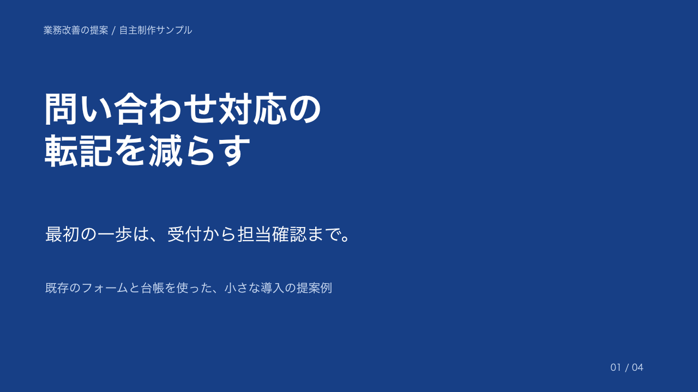

WORK SAMPLE / 自主制作
営業資料・スライドの作例
原稿の情報を整理し、相手が判断しやすい順番に。修正前の文章と4枚のスライドを比べ、編集可能なPowerPointをダウンロードできます。
導入前の例
情報を一続きに説明すると、課題と提案範囲が埋もれやすい。
この作例で試せること
目的、課題、実施範囲、判断条件を分けて見せます。
架空の素材・数値を使った自主制作デモです。顧客への納品実績ではありません。
営業資料・スライドの作例
01 原稿 / 02 構成 / 03 スライド見本 / 04 編集可能な成果物
01 元の原稿
情報をまとめて書いた、修正前の原稿例です。
問い合わせの対応について提案します。フォームから来た内容を台帳に入力し、担当の割り当てはチャットで連絡しています。未確認の問い合わせを探すため台帳とチャットを確認しています。フォーム1つと既存台帳を対象に、入力反映と担当通知を試したいです。転記時間、未確認件数、修正件数を確認して継続を判断します。
この原稿に対応する構成見本を表示します。任意の原稿を自動変換する機能ではありません。
02 伝える順番を整理
- 提案の目的：問い合わせの転記を減らす
- 現在の課題：転記と担当確認が分かれている
- 実施範囲：受付、台帳、担当確認をつなぐ
- 判断条件：小さく試して継続を判断する
一続きの説明を、判断に必要な4枚に分けました。未確認の成果数値は加えていません。
左のボタンで、構成とスライド見本を確認できます。
03 修正後のスライド見本
4枚のPPTXと同じ内容を表示しています。元原稿との対応は上の構成をご確認ください。

提案の目的を、最初の1枚で伝えます。
04 編集できるPowerPoint
文字はPowerPoint上で編集できます。画像を貼っただけのスライドではありません。画面の表示切替はダウンロードする内容を変更しません。
PowerPoint見本をダウンロード（4枚）Canvaの編集ファイルは含みません。使用環境によりフォントが置き換わる場合があります。
PCではウィンドウ内をスクロールできます。スマホではページを縦に読み進められます。
原稿整理から、編集できる資料まで
会社説明、営業提案、社内報告など、読む相手と用途に合わせて構成を整えます。既存資料の整理や、継続して使う共通フォーマットの制作にも対応します。
ご用意いただくもの
原稿や既存資料、読む相手、使用場面、指定の色や書体があると進めやすくなります。掲載する事実と数値を確認し、編集可能な形式でお渡しする範囲を決めます。